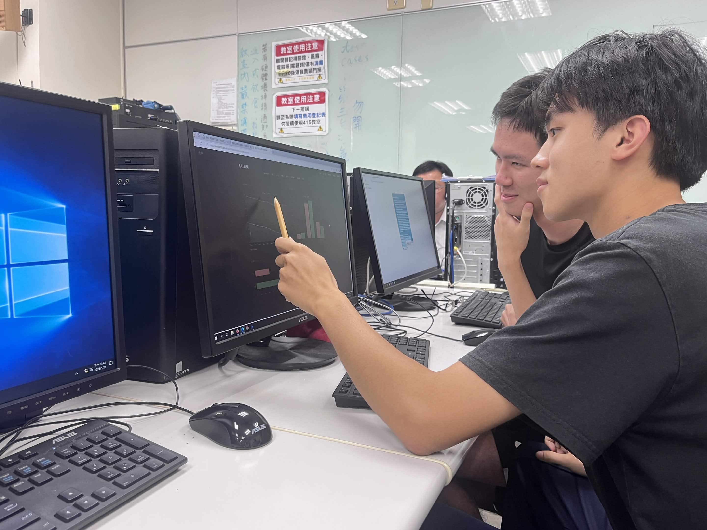
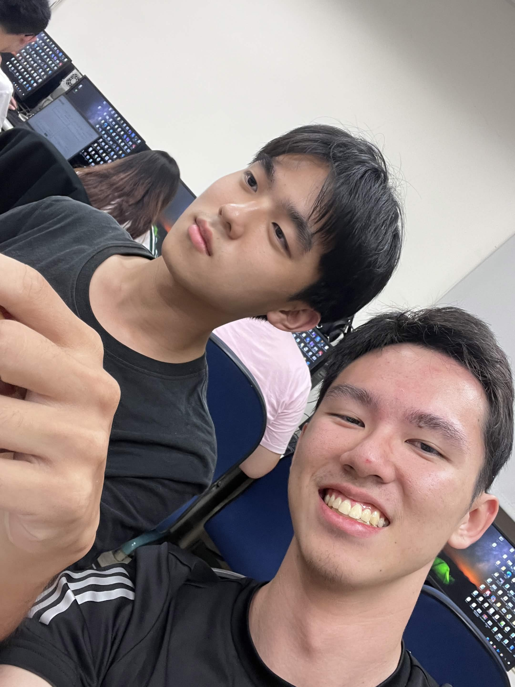
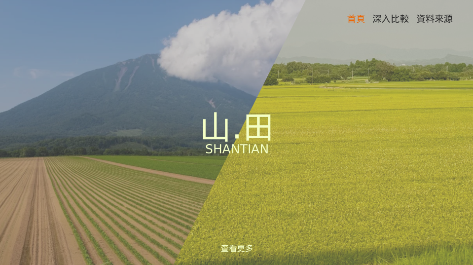
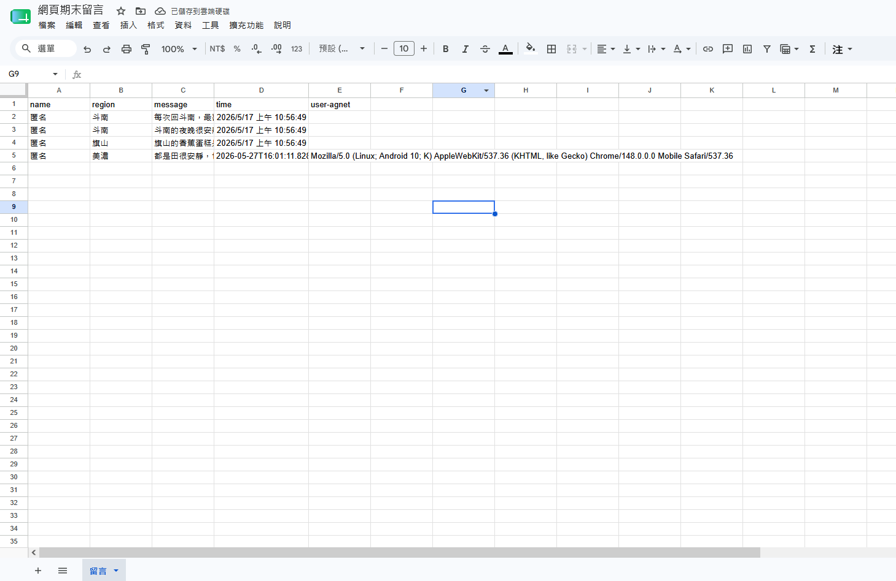

2026
CONCEPT · DESIGN · PROCESS
山
·
田
SHANTIAN
旗山 × 斗南｜地方比較網站
設計概念、技術架構與 AI 協作開發紀錄
SCROLL
01
01 · PROJECT OVERVIEW
命名靈感
NAMING INSPIRATION
山·田 SHANTIAN
「山·田 SHANTIAN」靈感源自旗山依山而生的地貌，以及斗南隨處可見的田野景致。透過「山」與「田」二字，串連兩個地區的風土特色，轉化為簡約而深具識別性的品牌語言。
高雄市 · 旗山區
雲林縣 · 斗南鎮
02
02 · DESIGN PHILOSOPHY
設計理念
I
簡潔
以攝影作品集為靈感，使用大量留白、嚴謹的排版、單色設計。避免裝飾性元素，讓內容本身成為視覺焦點。
II
低飽和
全站使用深色背景，搭配低飽和度的暖橘（旗山）與橄欖綠（斗南）作為地區識別色。刻意降低色彩飽和度，避免過度花俏的色彩干擾閱讀。
III
互動
留言牆頁面，讓每個造訪網站的人都可留下自己對台灣甚至其他國家各地的獨特記憶。
03
03 · DESIGN SYSTEM
設計語言
COLOR PALETTE
背景主色
#131312
背景次色
#191917
文字主色
#d8d3c8
輔助文字
#6a6760
旗山色
#996040
斗南色
#4d6b38
分隔線
#252320
TYPOGRAPHY
旗山 × 斗南
NOTO SERIF TC · WEIGHT 300 · DISPLAY
SHANTIAN 2025
PLAYFAIR DISPLAY · ITALIC · ACCENT
高雄市旗山區 · 雲林縣斗南鎮
NOTO SANS TC · WEIGHT 400 · BODY
"
PLAYFAIR DISPLAY · DECORATIVE QUOTE
UI COMPONENTS
旗山
REGION BADGE
EYEBROW LABEL
比較頁標題示例
旗山老街
香蕉文化
縱貫鐵路
─── 時間軸節點 / 分隔線元件
04
04 · SITE ARCHITECTURE
網站架構
山·田 SHANTIAN
首頁
INDEX
深入比較
COMPARE
美食地圖
FOOD MAP
留言牆
MEMORIES
GAS + Sheets
資料來源
SOURCES
分割畫面
Hero 動畫
卡片比較
9 個比較區塊
圖片放大
Chart.js 圖表
Leaflet 地圖
Leaflet.js
標記高亮
浮動卡片牆
GAS 後端
Google Sheets
參考文獻
分類索引
說明標籤
05
05 · TOOLS & TECHNOLOGY
工具與技術
Claude AI
Anthropic · 核心開發工具
網頁主要透過 Claude Sonnet 4.6 協作完成，是本專題最重要的協作工具。
Bootstrap 5
排版輔助框架
使用Bootstrap 5的網格布局以及圖片輪播元件。
Leaflet.js
互動地圖引擎
透過Leaflet.js使用OpenStreetMap圖資。搭配 CartoDB Light 底圖與自訂 SVG 標記，呈現簡潔的地圖資訊。
Chart.js
數據視覺化
使用Chart.js來呈現比較頁人口結構四組圖表。
Google Apps Script
留言牆後端
處理留言牆頁面的 GET（讀取留言）與 POST（寫入新留言）請求。
Google Sheets
資料庫
將留言牆每筆留言包含名稱、地區、內容儲存到 Google 試算表，以試算表作為輕量資料庫。
Fancybox.js
圖片放大
透過Fancybox實現點擊圖片放大檢視的效果。
Google Fonts
字型服務
Noto Serif TC（標題）、Playfair Display（數字與裝飾）、Noto Sans TC（內文）。
06
06 · AI COLLABORATION
AI 協作開發
Claude
ANTHROPIC · CLAUDE SONNET 4.6
網頁程式碼、設計系統、元件架構及功能實作主要由 Claude AI 完成。並使用Claude Code 進行細節的修改。
Claude 在本專題中的具體貢獻：
→
生成五個完整頁面的 HTML/CSS/JS
→
建立並維護跨頁面一致的設計語言
→
整合 Leaflet、Chart.js、FancyBox 等第三方工具
→
除錯
ChatGPT
OPENAI · GPT 5.5
Google App Script主要由chatgpt所生成。
ChatGPT 在本專題中的具體貢獻：
→
生成GAS程式碼
→
除錯GAS程式碼
07
07 · PRODUCTION PROCESS
網頁製作過程
STAGES · 製作階段
01
初期規劃
在討論初期，我們首先大致規劃了網頁名稱與核心內容，並在首次更新時敲定首頁的基礎色調、格式與動畫效果。
02
頁面擴充
確認完風格後，我們新增了「比較頁面」與「資料來源頁面」，並針對比較頁面進行調整，擬定具體的對比項目與圖片排版方式，要求其與整體的網站設計語言保持一致。
03
增修細節
接下來，我們著手打磨比較頁面的細節，重點在於優化導覽體驗與版面呈現。包括修正導覽跳轉問題、調整導覽列樣式、重新整理各區塊的比較布局，並將部分內容改為更直觀的圖文或數據呈現。
04
新增美食地圖
我們將美食比較的部分，獨立出另一個頁面製作成「美食地圖」，並在每個店家都添加了圖片、文字敘述以及地圖資訊。
05
互動功能
為了增加互動感，我們決定新增「留言牆」頁面，讓留言以卡片浮動的效果呈現，模擬便利貼張貼的感覺。資料儲存則使用 Google Apps Script 將留言蒐集並存至 Google Sheets。
06
測試與修訂
在測試後，我們發現並修正了幾個問題，包括調整時間顯示錯誤、限制地區欄位只能輸入文字，並在 GAS 端加入了過濾系統。
07
最終迭代
在歷經數次迭代、確定網頁整體設計後，我們最終針對網頁內各項目所需的圖片及文本內容進行了細部修正。
SCROLL TO EXPLORE
PROCESS GALLERY · 製作記錄

討論

討論

網頁最初草稿

留言儲存測試
SCROLL TO EXPLORE
08
08 · LIVE DEMO
網頁展示
首頁
深入比較
美食地圖
留言牆
資料來源
shantian / index.html
PAGE 01 · INDEX
首頁
以對角線分割的全螢幕 Hero 呈現旗山與斗南的地景對比。點擊「查看更多」後，兩側畫面以門扉打開的動畫展開，進入比較卡片內容。捲回頂部時畫面自動合攏。
CSS clip-path 對角分割 Hero
畫面打開 / 合攏動畫
IntersectionObserver 捲動觸發
在新分頁開啟 →
shantian / compare.html
PAGE 02 · COMPARE
深入比較
九個比較區塊依次展開：基本資料、歷史時間軸、人口圖表、交通地圖、教育統計、生活機能、核心場域、自然環境、作者視角。
懸浮毛玻璃子導覽列
Chart.js 四組人口圖表
Leaflet 交通地圖 + 輪播
Fancybox圖片放大
在新分頁開啟 →
shantian / food.html
PAGE 03 · FOOD MAP
美食地圖
整合 Leaflet.js 互動地圖，標記旗山與斗南共 11 個美食地點。點擊標記彈出含圖片輪播的店家資訊。
CartoDB Positron 地圖底圖
自訂 SVG 標記（主動/非主動狀態）
地點卡片縮圖列表
在新分頁開啟 →
shantian / memories.html
PAGE 04 · MEMORY WALL
留言牆
每位訪客皆可留下與家鄉相關的記憶。卡片以隨機大小、旋轉角度與垂直偏移浮動呈現。點擊卡片放大閱讀。透過 Google Apps Script 寫入 Google Sheets。
Google Apps Script 後端 + Google Sheets 儲存
浮動卡片動畫
在新分頁開啟 →
shantian / sources.html
PAGE 05 · SOURCES
資料來源
完整列出本網站所使用的數據、統計與文獻來源，依旗山相關、斗南相關與共同引用三類分組，並標注來源類型（政府 / 統計 / 研究）。
參考文獻索引
來源類型標籤
在新分頁開啟 →